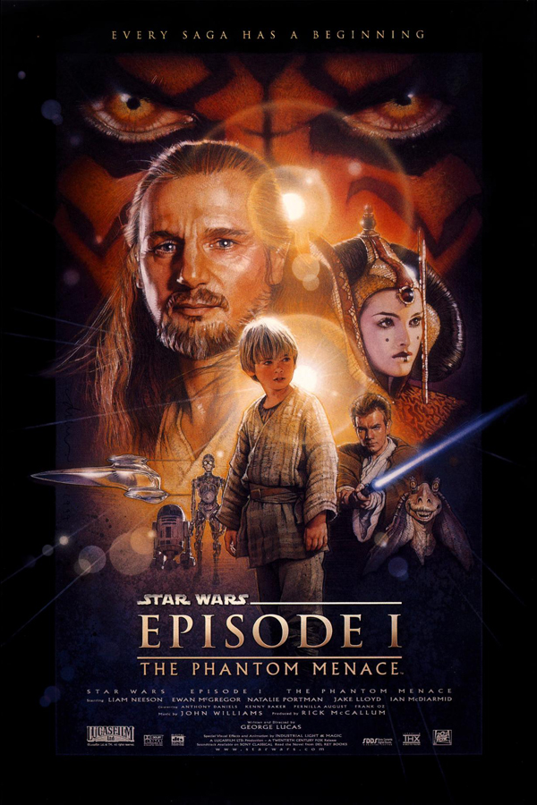
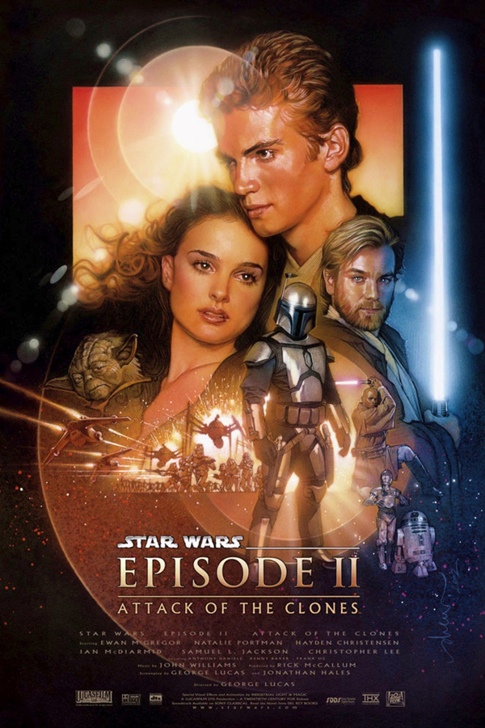
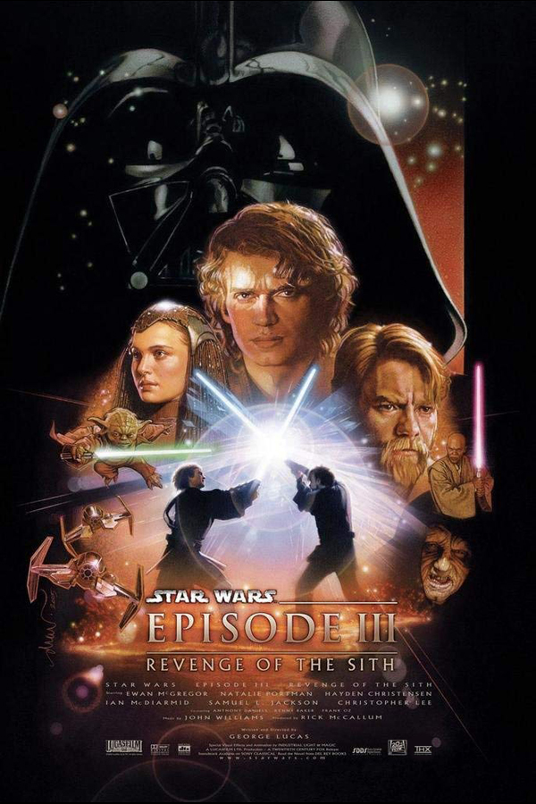

Episode I: The Phantom Menace
Two Jedi escape a hostile blockade to find allies and come across a young boy who may bring balance to the Force, but the long dormant Sith resurface to claim their old glory.
Episode II: Attack of the Clones
Ten years after initially meeting, Anakin Skywalker shares a forbidden romance with Padmé Amidala, while Obi-Wan Kenobi investigates an assassination attempt on the senator and discovers a secret clone army crafted for the Jedi.
Episode III: Revenge of the Sith
Three years into the Clone Wars, the Jedi rescue Palpatine from Count Dooku. As Obi-Wan pursues a new threat, Anakin acts as a double agent between the Jedi Council and Palpatine and is lured into a sinister plan to rule the galaxy.
Facts at a Glance
| Film | The Phantom Menace | Attack of the Clones | Revenge of the Sith |
|---|---|---|---|
| Release Date | 15 July 1999 | 16 May 2002 | 19 May 2005 |
| IMDB Rating | 6.5 | 6.5 | 7.5 |
| Budget | $155M | $115M | $113M |
| Box Office Gross | $1,027,082,707 | $653,779,970 | $868,390,560 |